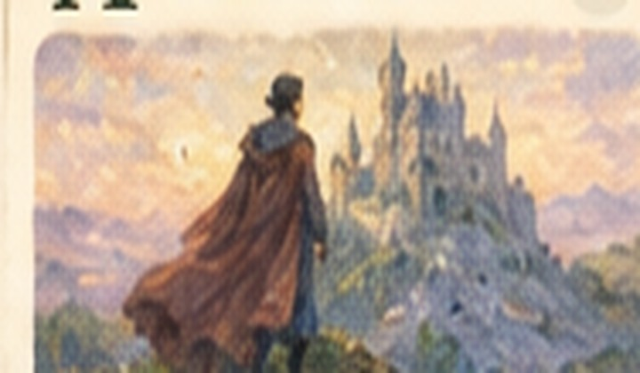

AAN IMPRESSIONIST MOMENT
選擇一個字母，打開一段文學記憶。

noun
野心；雄心
a strong desire to achieve success or power
“Vaulting ambition, which o’erleaps itself / And falls on the other.”
本圖鑑以莎士比亞戲劇中的經典語句為起點，透過詞彙、聲音與圖像，重新感受英文的韻律與文學的魅力。每個音檔皆為獨立檔案，歡迎錄製自己的聲音並替換。